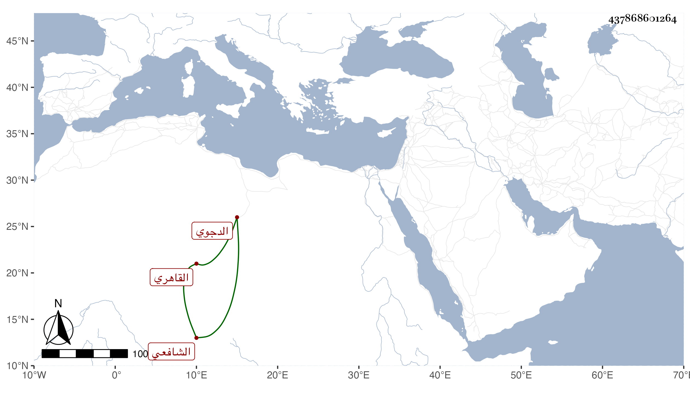

0902Sakhawi.DawLamic.ITO20230111-ara1.EIS1600.437868601264
Biography ID: 437868601264
623
علي بن أحمد بن محمد بن أحمد بن حيدرة بن عمر بن محمد بن موسى بن عبد الجليل بن تميم بن محمد النور بن الشهاب الدجوي ثم القاهري الشافعي . سمع على الحلاوي وابن الشيخة وغيرهما وأكثر من الحضور في أمالي الولي العراقي ، وحدث سمع منه الطلبة . ومات في يوم الخميس سادس عشري رمضان سنة خمس وأربعين . أرخه النجم بن فهد في معجمه ، وسيأتي ابن عمه علي بن المحب محمد بن العز أحمد .
